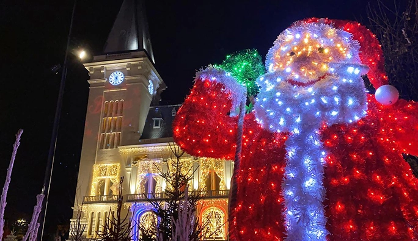

Après deux ans d’absence à cause de la crise sanitaire, les festivités de Noël font leur grand retour à Liévin.
Et pour cette nouvelle édition des festivités de Noël, la ville de Liévin a décidé de déplacer les animations de la Place Gambetta au parvis de l’Hôtel de ville. Du 19 au 23 décembre de 14h à 19h, c’est le p’tit village du Père Noël qui viendra s’y installer, pour le plus grand bonheur des enfants.

Outre le changement de lieu, cette édition 2022 a été raccourci dans le temps afin de concentrer toutes les animations sur une seule et même semaine. C’est donc durant la première semaine des vacances scolaires que seront organisées toutes les animations par les services de la ville.
Vous y trouverez une patinoire, un petit train, et même un chalet où vous pourrez partager un chocolat chaud en famille, sans oublier les confiseries.
Vous pourrez écouter confortablement des contes de Noël à l’intérieur d’une yourte...
Rendez-vous le 23 décembre à 18h sur le parvis de l’Hôtel de ville lors de la soirée de clôture du Village du Père Noël, avec la descente du Père Noël sur le beffroi de notre Hôtel de Ville et une parade féérique.